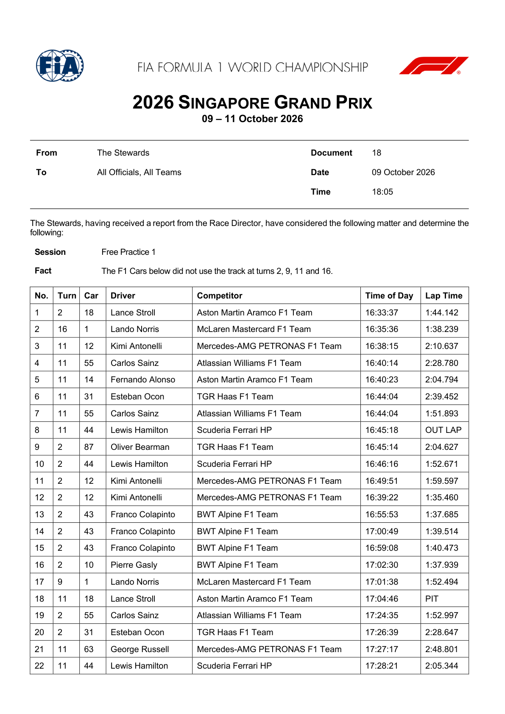
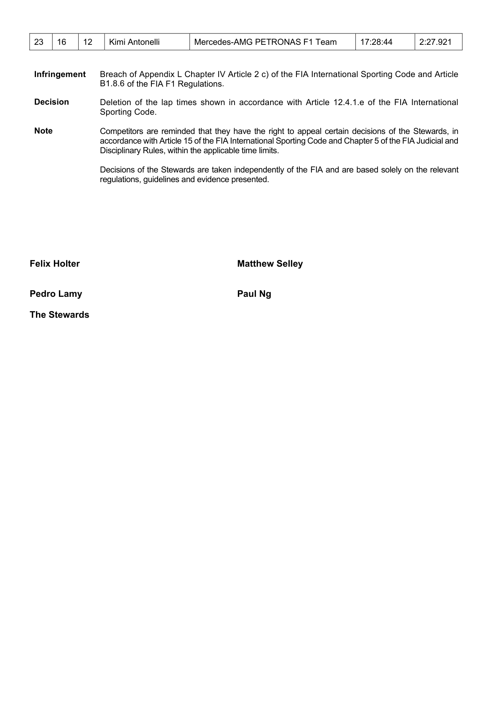

Stewards
Penalties & Stewards
Every stewards' decision, infringement, fine and penalty from the FIA event documents.
0
Penalties
0
Fines
0
Warnings / reprimands
0
No further action
| Doc | Driver | Session | Matter | Ruling |
|---|---|---|---|---|
| Doc 18 | Lance Stroll; Lando Norris; Kimi Antonelli; Carlos Sainz; Fernando Alonso; Esteban Ocon; Lewis Hamilton; Oliver Bearman; Franco Colapinto; Pierre Gasly; George Russell | Free Practice 1 | The F1 Cars below did not use the track at turns 2, 9, 11 and 16. | Note Deletion of the lap times shown in accordance with Article 12.4.1.e of the FIA InternationalView FIA decision — 2 pagesOriginal FIA PDF. Retrieved 2026-10-09T10:46:48+00:00 (not the issue date).   |
Source: FIA — Singapore Grand Prix documents (stewards' decisions).